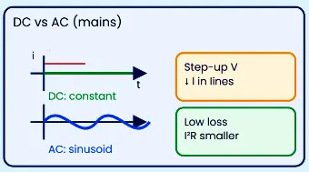
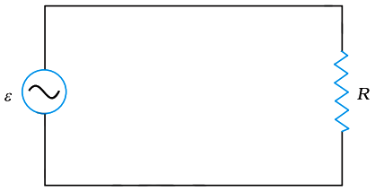
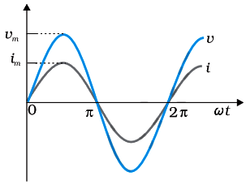
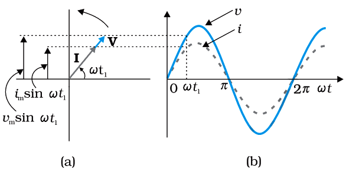
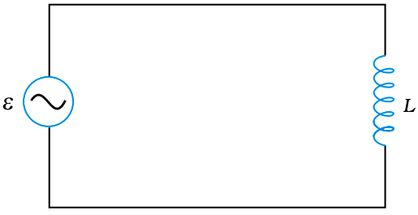
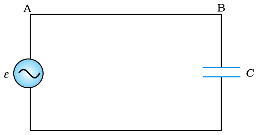
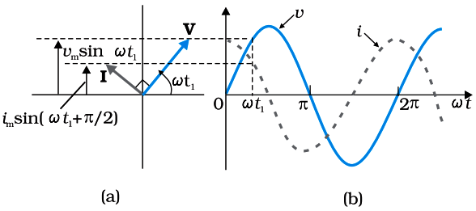
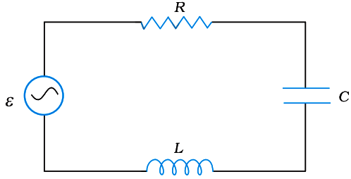
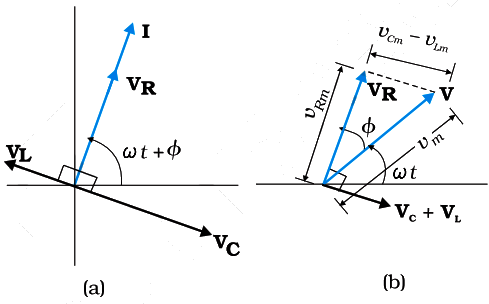
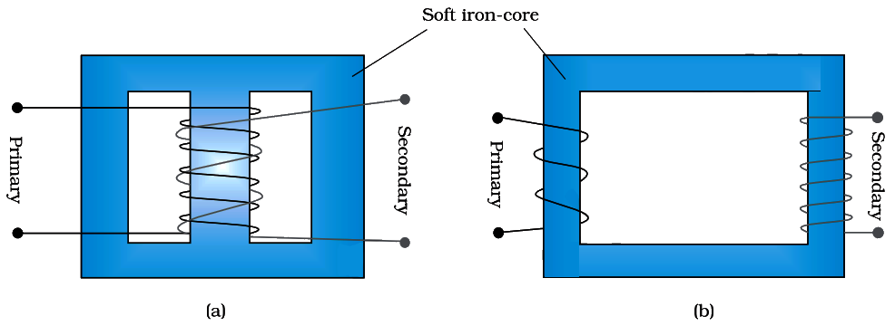

Physics
ALTERNATING CURRENT
DC is steady; mains AC is sinusoidal—and AC wins for transmission via easy voltage
conversion
AC AND DC BASICS
📖Definition & Introduction
- Direct current (dc): current that does not change direction with time (ideally constant magnitude).
- Alternating current/voltage (ac): varies with time and reverses direction; mains is typically sinusoidal.
- Sinusoidal form: v(t) = vm sin(ωt), i(t) = im sin(ωt + φ).
- Frequency f (Hz) = cycles per second; period T = 1/f; angular frequency ω = 2πf.
- Quoted mains voltage (e.g. 220 V or 230 V) is rms, not peak; peak vm = √2 V (for a sine wave).
- AC preferred for power transmission because transformers step-up/step-down voltage efficiently, reducing I2R loss.
2 Diagram

DC is steady; AC reverses sinusoidally, enabling transformer-based high-voltage
transmission.
🎯Key Concepts
- 📈Sinusoidal mains reverses every half-cycle; average i over a full cycle is zero.
- 🧮RMS (effective) values for sine: I = im√2, V = vm√2; they give the same heating as a DC of magnitude I or V in a resistor.
- 🔥In a resistor, average power over a cycle (sine steady state): Pavg = I2R = V2R (use rms).
- ⚡Transmission idea: for fixed delivered power (pf≈1), higher V ⇒ lower I ⇒ much smaller line loss (I2R).
- 🔁Transformer works only with AC: needs time-varying magnetic flux (mutual induction).
- 📻Radio tuning uses frequency dependence (resonance in LC); it helps select one station’s frequency.
🔎SINUSOIDAL MAINS: WHAT THE SYMBOLS MEAN
- Instantaneous value varies: v can be +, 0, or −; polarity reverses each half-cycle.
- Peak (amplitude) values: vm, im; rms values are what instruments and ratings use.
- Relations: T = 1/f, ω = 2πf; for India mains typically f = 50 Hz.
- In a pure resistor: v and i are in phase and follow Ohm’s law at each instant: v = iR.
⚙️WHY AC IS PREFERRED FOR POWER TRANSMISSION
- For delivered power P at line voltage V (pf≈1): I = PV; raising V reduces I.
- Line heating loss: Ploss = I2Rline; cutting I by 10 cuts loss by 100.
- Transformers step-up voltage at power stations and step-down near consumers efficiently (mutual induction).
- AC frequency dependence enables devices: radio/TV tuning selects a frequency using resonant circuits.
⚖️DC vs SINUSOIDAL AC (EXAM COMPARISON)
| Basis | DC | AC (sinusoidal) |
|---|---|---|
| Direction | Fixed (does not reverse) | Reverses every half-cycle |
| Typical time form | Constant (ideal) | v=vm sin(ωt) |
| Key rating used | Actual value itself | RMS value (V, I) |
| Average current over a cycle | Equals the current | Zero (for symmetric sine) |
| Voltage conversion | Needs electronic converters | Easy with transformer (step-up/step-down) |
| Long-distance transmission | Less economical at low V (higher I losses) | Economical using high V and low I |
🧮Formulas
Sinusoidal current in a resistor and average of sin2:
i=im sin(ωt) ⇒
p=i2R=im2R
sin2(ωt)
sin2(ωt) = 12(1 − cos(2ωt))
Over one full cycle, ⟨cos(2ωt)⟩ = 0:
⟨sin2(ωt)⟩ = 12 ⇒ Pavg = 12im2R
Define rms current I so that Pavg =
I2R:
I = im√2, V = vm√2
| v(t) = | Instantaneous voltage (V) |
| i(t) = | Instantaneous current (A) |
| vm, im = | Peak (amplitude) voltage/current |
| V, I = | RMS (effective) voltage/current |
| f, T = | Frequency (Hz), period (s) |
| ω = | Angular frequency (rad s−1), ω=2πf |
| R = | Resistance (Ω) |
RMS links AC ratings to heating (pure resistor, sine wave)
I=im√2, V=vm√2,
Pavg=I2R=VI
⭐Important Points
- Mains voltage rating is rms (for sinusoidal mains); peak is √2 times the rms value.
- Average current in sinusoidal AC over a full cycle is zero, but heating (average power in a resistor) is not zero.
- For a pure resistor: v and i are in phase; in rms form V = IR.
- Transmission loss depends on I2Rline; high V transmission reduces I for the same delivered P (pf≈1).
- Transformers require time-varying flux, hence work with AC (not steady DC).
💡Memory Technique
“RMS recall: "Same Heating as DC"”
🧮Formula Sheet
Sinusoid: v=vm sin(ωt),
i=im sin(ωt+φ)Frequency:
T=1/f, ω=2πfRMS (sine): V=vm√2, I=im√2Pure
resistor (rms): V=IRAverage power in pure R:
Pavg=I2R=VI=V2RTransmission (pf≈1): I=PV, loss
Ploss=I2Rline
Purely resistive AC: v and i in phase; power and RMS made simple
AC IN RESISTOR
📖Definition & Introduction
- A pure resistor R on AC obeys Ohm’s law at every instant: v(t) = i(t)R.
- Applied sinusoidal voltage: v(t) = vm sin(ωt), where vm is peak value.
- Current is sinusoidal with same phase: i(t) = im sin(ωt), where im = vmR.
- In a resistor, v and i cross zero and reach maxima/minima simultaneously ⇒ phase difference 0.
- Instantaneous power dissipated: p(t) = i2R is always ≥ 0, so heating occurs in every half-cycle.
- Average power over a cycle is non-zero and is conveniently written using RMS values: Pavg = I2R = V2R.
2 Diagram


Pure resistor on AC: same instantaneous relation v = iR and phase
difference 0.
🎯Key Concepts
- 🧭Kirchhoff loop: ε(t) − iR = 0 ⇒ v = iR at each instant
- 📈Waveforms: v and i are both sine waves with same phase angle (0° shift)
- 🔁Average current over a cycle is zero, but average power is not zero (depends on i2)
- 🔥Power in resistor: p(t) = i2R = v2R (always positive)
- 🧮RMS idea: effective AC equals DC that gives same average heating in same R
🔎TIME-DOMAIN RELATION: v(t) AND i(t)
- Given source: v(t) = vm sin(ωt).
- Loop rule: ε(t) − iR = 0 ⇒ v(t) = i(t)R.
- So i(t) = vmR sin(ωt) = im sin(ωt).
- Peak relation: im = vmR (same as dc form).
- Phase: both contain sin(ωt) ⇒ peaks and zeros occur together (in phase).
⚙️POWER AND RMS: WHY HEATING IS ALWAYS THERE
- Instantaneous power in resistor: p(t) = vi = i2R = v2R.
- With i = im sin(ωt): p(t) = im2R sin2(ωt).
- Use sin2(ωt) = 12(1 − cos(2ωt)); average of cos(2ωt) over a cycle is 0.
- So Pavg = 12im2R = I2R, where I = im√2.
- Similarly V = vm√2 and rms Ohm’s law: V = IR.
🧮Formulas
Applied voltage across R:
v(t) = vm sin(ωt)
Kirchhoff loop (only R present):
ε(t) − iR = 0 ⇒ v(t) =
i(t)R
Current waveform and peak current:
i(t) = vmR sin(ωt) =
im sin(ωt), im = vmR
Instantaneous power in R:
p(t) = i2R =
im2R sin2(ωt)
Average over a cycle using sin2(ωt) identity:
sin2(ωt) = 12(1 − cos(2ωt)) ⇒
⟨sin2(ωt)⟩ = 12
Average power and RMS definitions:
Pavg = 12im2R =
I2R, I = im√2, V = vm√2
| v(t) = | Instantaneous voltage across resistor (V) |
| i(t) = | Instantaneous current through resistor (A) |
| vm = | Peak (maximum) voltage (V) |
| im = | Peak (maximum) current (A) |
| ω = | Angular frequency (rad s−1), ω = 2πf |
| R = | Resistance (Ω) |
| V = | RMS (effective) voltage (V) |
| I = | RMS (effective) current (A) |
Most important result
V = IR, Pavg = I2R =
V2R (pure resistor, φ
= 0)
⭐Important Points
- In pure R, phase angle φ = 0 ⇒ power factor cosφ = 1 (maximum real power).
- Do not mix peak and rms: peak relations use vm, im; heating uses rms.
- Average current over a complete cycle is zero: ⟨i⟩ = 0, but ⟨i2⟩ ≠ 0.
- For sinusoid: ⟨sin2(ωt)⟩ = 1/2 ⇒ I = im/√2, V = vm/√2.
- Average power: Pavg = 12im2R = I2R = VI (for φ = 0).
💡Memory Technique
“Mnemonic: "R = RESISTIVE = REAL power"”
🧮Formula Sheet
v(t) = vm sin(ωt)v(t) = i(t)R ⇒ i(t) = im
sin(ωt)im = vmRp(t) = i2R = v2Rsin2(ωt) = 12(1 −
cos(2ωt)), ⟨sin2⟩ = 12I = im√2, V = vm√2Pavg = 12im2R =
I2R = V2R
Rotating-vector method to represent sinusoidal v(t), i(t) and
compare phase angles (pure resistor: 0°)
PHASOR REPRESENTATION
📖Definition & Introduction
- Phasor is a vector of fixed magnitude rotating with angular speed ω about the origin.
- Its vertical projection gives the instantaneous value of a sinusoidally varying quantity.
- The phasor length equals the chosen magnitude scale (in this sheet: peak values), so |V| = vm, |I| = im.
- Angle between two phasors represents the phase difference between the corresponding sinusoids.
- Voltage and current are scalars; phasors are a mathematical device to represent amplitude and phase.
- For a pure resistor, V and I are aligned, so phase difference = 0.
2 Diagram

A sinusoid is the vertical projection of a phasor rotating at angular speed
ω; in a pure resistor, V and I overlap (in phase).
🎯Key Concepts
- 🔄Rotating vector at ω: angle from +x axis at time t is ωt + phase constant.
- 📉Projection rule: the phasor’s vertical component generates the sinusoidal value vs time.
- 📌Two sinusoids are compared by phasor separation: Δφ = φ1 − φ2.
- 🧾Pure R: v and i are proportional at every instant, so they are in phase.
- 🧠Phasor diagrams describe steady-state sinusoidal response (not transients/initial conditions).
🔎HOW PHASORS GENERATE SINUSOIDS
- Take a vector of fixed length (e.g., vm) rotating CCW with angle θ(t) = ωt + φ.
- Vertical projection gives the instantaneous value: v(t) follows a sine wave in time.
- A different starting angle (φ) shifts the sine wave left/right (phase shift).
- Phase difference Δφ is the constant angular separation between two phasors.
⚙️PHASOR DIAGRAM FOR PURE RESISTOR (R)
- Ohm’s law holds instant-by-instant: v(t) = i(t)R.
- Since both are proportional to sin(ωt), their zeroes and maxima occur together.
- Therefore voltage and current are in phase for a pure resistor.
- Phasor picture: V and I point in the same direction (phase difference 0°).
⚖️SINUSOID vs PHASOR (WHAT EACH SHOWS)
| Basis | Sinusoidal graph | Phasor diagram |
|---|---|---|
| What is plotted | v or i vs time | Rotating vectors in a plane (compare angles) |
| Easiest to see | Time variation, period | Phase difference (lead/lag) |
| Amplitude meaning | Peak height = vm, im | Vector length equals chosen reference magnitude (often peak or rms; must be stated) |
| Pure resistor result | v(t) and i(t) overlap in time | V and I aligned (phase difference 0°) |
⭐Important Points
- Always state whether phasor magnitudes are peak or rms; both conventions exist.
- Vertical projection convention gives sine form; choosing cosine just changes the reference phase.
- Phase difference is read as the angular separation of phasors rotating together at the same ω.
- Voltage/current are scalars; phasors are a representation to handle sinusoidal phase relations.
- Pure resistor: V and I coincide, so phase difference is 0°.
💡Memory Technique
“SHADOW RULE”
📌Quick Recap
Phasor idea: instantaneous value is the vertical projection of a rotating
phasor.General sinusoid form: x(t) = xm
sin(ωt + φ), where φ is phase constant.Phase difference
between two sinusoids of same ω is the constant angle between their phasors
(Δφ).Pure resistor: v(t) and i(t) are in
phase → phasors V and I aligned (0°).Always declare phasor
magnitude convention: peak or rms (do not mix without conversion).
Derive i(t), define XL, show 90° lag and zero average
power
AC IN PURE INDUCTOR
📖Definition & Introduction
- A pure inductive circuit has only an inductor L (negligible resistance) connected to AC source.
- Inductor produces self-induced emf opposing change in current: eL = −L didt (Lenz’s law).
- With passive sign convention for the inductor drop in the loop: applied voltage equals inductor drop: v(t) = L didt.
- In a pure inductor, current lags voltage by 90° (phase lag π/2 = T/4).
- Inductive reactance XL = ωL acts as AC opposition (unit Ω); average power over a cycle is zero.
2 Diagram

Pure inductor on AC: v(t) drives changing i(t), but
self-induced emf opposes changes.
🎯Key Concepts
- ⚡Element law: induced emf eL = −L didt; in loop (passive sign convention) inductor drop is v = L didt.
- 🌀i(t) = im sin(ωt − π/2) ⇒ current reaches maxima T/4 after voltage.
- 🧱XL = ωL increases with frequency and inductance; higher XL → smaller current (for same applied voltage).
- 🔁Energy is stored in magnetic field and returned; net energy per cycle = 0 ⇒ Pavg = 0.
🔎DERIVATION: CURRENT IN PURE INDUCTOR
- Start: v = vm sin(ωt), and loop gives v = L didt.
- So didt = (vm/L) sin(ωt); hence didt is in phase with v(t).
- Integrate: i(t) = −(vm/(ωL)) cos(ωt) + C.
- Steady-state AC has no DC component ⇒ C = 0, hence i(t) = im sin(ωt − π/2).
- Amplitude: im = vm/(ωL) = vm/XL.
⚙️PHASE & POWER (WATTLESS CURRENT IDEA)
- Phase: i lags v by π/2; time lag = (π/2)/ω = T/4.
- Instantaneous power: p = vi = −(vmim/2) sin(2ωt).
- Average over a full cycle: ⟨sin(2ωt)⟩ = 0 ⇒ Pavg = 0.
- Meaning: energy alternates between source and magnetic field; no net consumption without resistance.
⚖️PURE RESISTOR vs PURE INDUCTOR (AC)
| Basis | Pure Resistor (R) | Pure Inductor (L) |
|---|---|---|
| Governing relation | v = iR | v = L didt |
| Phase difference | 0° (in phase) | 90° (current lags) |
| Opposition to AC | R (constant) | XL = ωL (depends on ω) |
| Average power | Pavg = VI (rms) = I2R | Pavg = 0 |
🧮Formulas
Loop equation for pure inductor (no R):
v(t) − L didt = 0 ⇒ v = L didt
With v = vm sin(ωt):
didt = vmL sin(ωt)
Integrate and choose steady-state (no DC component):
i(t) = −vmωL cos(ωt) =
im sin(ωt − π/2)
Peak-current relation and reactance definition:
im = vmωL, define
XL = ωL ⇒ im = vmXL
Instantaneous and average power:
p(t) = vi = −vmim2
sin(2ωt) ⇒ Pavg = 0
| L = | Self-inductance (H) |
| ω = | Angular frequency = 2πf (rad s−1) |
| vm, im = | Peak (amplitude) of voltage and current |
| XL = | Inductive reactance = ωL (Ω) |
| T = | Time period = 1/f |
| Pavg = | Average power over one full cycle (W) |
Most important result
i(t) = im sin(ωt − π/2), with
im = vmωL and
XL = ωL
⭐Important Points
- Use consistent type: rms with rms in I = V/XL; peak with peak in im = vm/XL.
- XL = ωL ⇒ doubling frequency doubles reactance and halves current (for fixed V).
- Phase: i(t) = im sin(ωt − π/2) is the standard exam form.
- Average power in pure inductor is zero because φ = 90° ⇒ cosφ = 0.
- Instantaneous power alternates ±: inductor stores energy in magnetic field and returns it.
💡Memory Technique
“LAG-L mnemonic”
🧮Formula Sheet
v(t) = vm sin(ωt)v = L didt
(pure inductor loop)i(t) = im sin(ωt −
π/2)im = vmωLXL = ωL (Ω), and I (rms) = V (rms)XLPhase lag time: Δt = π/2ω =
T/4p(t) = −(vmim/2)
sin(2ωt), so Pavg = 0
Derivation of i(t), capacitive reactance XC, 90° lead & zero
average power
AC IN CAPACITOR (PURELY CAPACITIVE CIRCUIT)
📖Definition & Introduction
- A purely capacitive ac circuit has only a capacitor C connected to an ac source v(t).
- Charge and voltage are related by v = q/C; current is i = dq/dt.
- For v(t) = vm sin(ωt), the current leads the voltage by 90° (π/2).
- Capacitive reactance XC = 1/(ωC) opposes ac like resistance, but energy is stored in the electric field and returned.
- Instantaneous power oscillates in sign; average power over a cycle is zero ("wattless" on average, not zero current).
2 Diagram

Only capacitor present: current leads applied voltage by π/2; capacitor alternately
charges/discharges.
🎯Key Concepts
- ⚡Pure capacitor: i(t) = ωCvm cos(ωt) = im sin(ωt + π/2)
- 📐Phase: current phasor I is ahead of voltage phasor V by π/2 (90°).
- 🧮Reactance: XC = 1/(ωC) = 1/(2πfC), unit Ω; increases when f decreases.
- 🔁Power (capacitor): with v=vm sin(ωt), i=im cos(ωt), p(t)=imvm2 sin(2ωt) ⇒ Pavg=0.
🔎DERIVATION: CURRENT IN PURE CAPACITOR
- Loop: source voltage equals capacitor voltage ⇒ v(t) = q(t)/C.
- With v(t)=vm sin(ωt): q(t)=Cvm sin(ωt).
- Differentiate: i=dq/dt=ωCvm cos(ωt).
- Use cos(ωt)=sin(ωt+π/2) ⇒ i(t)=im sin(ωt+π/2), so current leads.
⚙️REACTANCE, PHASOR & POWER (EXAM CORE)

- Peak relation: im=ωCvm ⇒ im=vm/XC.
- XC=1/(ωC)=1/(2πfC); higher f or C ⇒ smaller XC ⇒ larger current.
- Phasor: I ahead of V by π/2 (counter-clockwise rotation convention).
- Power: p=vi=(imvm/2) sin(2ωt); average over a cycle is zero.
⚖️PURELY CAPACITIVE vs PURELY INDUCTIVE (PHASE & REACTANCE)
| Basis | Pure Capacitor (C) | Pure Inductor (L) |
|---|---|---|
| Current–voltage phase | I leads V by π/2 | I lags V by π/2 |
| Reactance | XC=1/(ωC) | XL=ωL |
| Frequency effect | Increase ω ⇒ XC decreases ⇒ current increases | Increase ω ⇒ XL increases ⇒ current decreases |
| Average power | 0 (energy stored in E-field returns to source) | 0 (energy stored in B-field returns to source) |
🧮Formulas
Given applied voltage
v(t) = vm sin(ωt)
For capacitor
v = qC ⇒
q(t)=Cvm sin(ωt)
Differentiate to get current
i = dqdt = ωCvm
cos(ωt)
Convert cos to sine with phase shift
cos(ωt)=sin(ωt+π/2) ⇒ i(t)=im
sin(ωt+π/2)
Peak current and reactance
im=ωCvm,
XC=1ωC,
im=vmXC
Instantaneous and average power
p(t)=vi=vm
sin(ωt)·im cos(ωt)=imvm2 sin(2ωt),
Pavg=0
| v(t) = | Instantaneous voltage across capacitor (V) |
| vm = | Peak (amplitude) voltage (V) |
| q(t) = | Charge on capacitor plates at time t (C) |
| C = | Capacitance (F) |
| i(t) = | Instantaneous current (A) |
| im = | Peak (amplitude) current (A) |
| ω = | Angular frequency = 2πf (rad s−1) |
| XC = | Capacitive reactance (Ω) |
Most important result
Pure capacitor: i(t)=im sin(ωt+π/2),
im=ωCvm, XC=1ωC, Pavg=0
⭐Important Points
- Use v=q/C and i=dq/dt to derive the +π/2 phase shift.
- In a capacitor: I leads V by π/2; time lead = T/4 = (π/2)/ω.
- XC decreases with frequency: at higher f, capacitor allows more current.
- Use consistent types: Irms=Vrms/XC and im=vm/XC (don’t mix rms with peak).
- Instantaneous power alternates sign; net average over a complete cycle is zero.
💡Memory Technique
“C in "ICE": I leads in C”
🧮Formula Sheet
v(t)=vm sin(ωt), ω=2πfCapacitor relation: v=qC, current: i=dqdtPure
capacitor current: i(t)=ωCvm cos(ωt)=im
sin(ωt+π/2)im=ωCvmXC=1ωC=12πfC,
Irms=Vrms/XCPower (pure
capacitor): p(t)=imvm2 sin(2ωt),
Pavg=0
Steady-state phasor solution: impedance, vector voltage sum, and lead/lag criterion
SERIES LCR PHASORS
📖Definition & Introduction
- In a series LCR with sinusoidal source, use phasors to relate V and I in steady state.
- KVL (time domain): Ldidt + iR + qC = v(t).
- Steady-state current: i(t) = im sin(ωt + φ); same i through R, L, C (series).
- VR in phase with I; VL leads I by π/2; VC lags I by π/2.
- Impedance magnitude: Z = √(R² + (XC − XL)²); phase: tan φ = (XC − XL)/R.
- Phasor method gives steady-state only; transient part depends on initial conditions and dies out with time.
2 Diagram


Take I along +x. Here VC is drawn upward and
VL downward, so the net vertical is (VC−VL). You
may swap up/down for VL, VC if you keep the net sign consistent.
🎯Key Concepts
- 🧭Vector addition: V is phasor sum of VR (along I) and the net reactive phasor (VC − VL) (perpendicular to I).
- 🧱Impedance triangle: base R, perpendicular (XC − XL), hypotenuse Z.
- ⏱️Lead/lag: XC>XL ⇒ φ>0 ⇒ I leads V; XL>XC ⇒ φ<0 ⇒ I lags V.
- 🔁Use all rms or all peak consistently: V = IZ works in both systems.
🔎STEADY-STATE PHASOR BUILD (SERIES LCR)
- Assume v = vm sin(ωt); steady current i = im sin(ωt + φ).
- Same I through all elements (series): phasor currents are identical in magnitude and phase.
- Voltage magnitudes: VRm = imR, VLm = imXL, VCm = imXC.
- Reactances: XL = ωL, XC = 1ωC (Ω).
- Phasor KVL: V is the vector sum of VR, VL, VC (not ordinary algebraic addition).
⚙️IMPEDANCE TRIANGLE + LEAD/LAG CRITERION
- Magnitude relation: Vm² = (imR)² + [im(XC − XL)]².
- Define impedance: Z = Vmim = √(R² + (XC − XL)²).
- Phase angle: tan φ = XC − XLR; φ is angle of V measured from I (since I is reference).
- If XC > XL: φ>0 ⇒ current leads voltage. If XL > XC: φ<0 ⇒ current lags voltage.
- Steady-state vs transient: phasors ignore initial conditions; transient decays, steady-state persists.
⚖️PHASE OF ELEMENT VOLTAGES (REFERENCE: CURRENT I)
| Element | Voltage–current phase | Key relation (magnitude) |
|---|---|---|
| Resistor R | VR in phase with I | VR = IR |
| Inductor L | VL leads I by π/2 | VL = IωL = IXL |
| Capacitor C | VC lags I by π/2 | VC = I1ωC = IXC |
🧮Formulas
Start with phasor drops in series: VR along I, reactive
drops ±90° to I.
V = VR + VL +
VC
Since VC and VL are collinear and opposite,
combine them into a single reactive phasor.
VX = VC −
VL
Right-triangle magnitude (Pythagoras):
Vm² = VRm² +
(VCm − VLm)²
Substitute VRm=imR,
VLm=imXL,
VCm=imXC:
Vm = im √(R² +
(XC − XL)²)
Define impedance and phase angle from the same triangle:
Z = √(R² + (XC −
XL)²), tan φ = XC −
XLR
| R = | Resistance (Ω) |
| L = | Inductance (H) |
| C = | Capacitance (F) |
| ω = | Angular frequency (rad s−1) |
| XL = | Inductive reactance = ωL (Ω) |
| XC = | Capacitive reactance = 1/(ωC) (Ω) |
| Z = | Impedance magnitude (Ω) |
| φ = | Phase angle of V w.r.t. I (rad or °); φ>0 capacitive, φ<0 inductive |
Core results for series LCR (phasor steady state)
Z = √(R² + (XC −
XL)²), I = VZ, tan φ = XC −
XLR
⭐Important Points
- In series, I is common; only voltages differ in phase and magnitude across R, L, C.
- Never add VR, VL, VC as ordinary numbers; add as phasors.
- VL and VC are 180° apart (both 90° from I but in opposite directions).
- Z acts like effective opposition: I = V/Z (use consistent peak or rms).
- Sign of φ decides lead/lag; magnitude |φ| from tan−1(|XC − XL|/R).
💡Memory Technique
“Mnemonic: "L Leads, C Chases" (with I as runner)”
🧮Formula Sheet
Time equation (series LCR): Ldidt + iR + qC = v(t)Steady current: i(t) = im sin(ωt + φ)XL = ωL, XC = 1ωCZ =
√(R² + (XC − XL)²)I = VZ (valid for both peak or rms if
consistent)tan φ = XC −
XLR;
XC>XL ⇒ φ>0 (current leads),
XL>XC ⇒ φ<0 (current lags)
When XL = XC, impedance is minimum and current is
maximum
RESONANCE IN SERIES RLC
📖Definition & Introduction
- Series RLC resonance occurs at the driving frequency where XL = XC, so net reactance is zero.
- At resonance, the circuit behaves purely resistive: phase angle φ = 0, so current is in phase with voltage.
- Impedance becomes minimum: Zmin = R, hence current amplitude is maximum: im = vm/R.
- Resonant angular frequency: ω0 = 1/√(LC), and resonant frequency f0 = ω0/(2π).
- Sharpness of resonance increases when R is smaller (taller, narrower current peak vs frequency).
- No true resonance in RL or RC series circuits because one reactance is missing; cancellation cannot occur.
🎯Key Concepts
- 🎯Condition: XL = XC ⇒ reactive drops cancel (equal magnitude, opposite direction in phasor).
- 📉Impedance: Z = √(R2 + (XC−XL)2) ⇒ at resonance Z=R (minimum).
- ⚡Maximum current: im=vm/R (also I=V/R in rms form).
- 🔎Smaller R ⇒ sharper resonance (better selectivity in tuning circuits).
- 🎛️Radio/TV tuning: vary C so ω0=1/√(LC) matches the station’s signal frequency.
🔎RESONANCE CONDITION & RESULTS
- Inductive reactance: XL = ωL; capacitive reactance: XC = 1/(ωC).
- Resonance when XL = XC ⇒ ω0L = 1/(ω0C).
- Hence ω0 = 1/√(LC) and f0 = 1/(2π√(LC)).
- At ω=ω0: Z = R (minimum), so im = vm/R (maximum).
- Phase: tanφ = (XC−XL)/R ⇒ φ=0 at resonance.
⚙️SHARPNESS (SELECTIVITY) & TUNING APPLICATION
- Smaller R ⇒ higher peak current and a narrower resonance curve (sharper tuning).
- Larger R ⇒ lower peak current and broader response (poor selectivity).
- In radio tuning, antenna receives many frequencies; tuned LC circuit selects one by adjusting C.
- Variable capacitor changes ω0 = 1/√(LC) until it matches the station frequency.
- No resonance in series RL or RC: cannot satisfy XL=XC without both L and C.
⚖️Resonance vs Non-resonant (RL/RC) Series Circuits
| Basis | Series RLC | Series RL / Series RC |
|---|---|---|
| Required elements | R, L, C all present | One of L or C missing |
| Resonance condition | XL = XC possible | Cannot make net reactance zero |
| Impedance minimum | Zmin = R at ω0 | Z varies with ω, but not down to R by cancellation |
| Current vs frequency | Shows a peak at ω0 | No sharp peak (no true resonance) |
| Use in tuning | Yes (selects desired frequency) | No (cannot selectively peak at one frequency) |
🧮Formulas
Series RLC impedance (phasor result):
Z = √(R2 + (XC −
XL)2)
Resonance condition (net reactance zero):
XL = XC
Put XL=ωL, XC=1/(ωC):
ω0L = 1ω0C
Solve for resonant angular frequency:
ω0 = 1√(LC)
Convert to resonant frequency:
f0 = ω02π = 12π√(LC)
At resonance, impedance is minimum and equals resistance:
Zres = √(R2 + 0) =
R
| R = | Resistance (Ω) |
| L = | Inductance (H) |
| C = | Capacitance (F) |
| ω, ω0 = | Angular frequency and resonant angular frequency (rad s−1) |
| f0 = | Resonant frequency (Hz) |
| XL, XC = | Inductive and capacitive reactance (Ω) |
| Z = | Impedance (Ω) |
| vm, im = | Peak (amplitude) voltage and current |
Resonance key results
ω0 = 1/√(LC)
f0 = 1/(2π√(LC))
Zres = R
Ires = V/R (rms)
f0 = 1/(2π√(LC))
Zres = R
Ires = V/R (rms)
⭐Important Points
- Resonance is defined by XL = XC, not merely “large current”.
- At resonance: φ=0, power factor cosφ=1, so average power is maximum for given V (rms).
- Impedance is minimum only in series RLC: Zmin=R.
- At resonance, VL and VC can be large but cancel in phasor sum.
- Increasing R lowers peak current and reduces selectivity (broadens resonance).
💡Memory Technique
“Mnemonic: "LC LOCK, Z ROCK-BOTTOM"”
🧮Formula Sheet
XL = ωL; XC = 1ωCZ =
√(R2 + (XC − XL)2)Resonance: XL = XC ⇒ ω0 = 1√(LC)f0 = 12π√(LC)
and ω0 = 2πf0At resonance (series):
Z=R, im=vm/R,
I=V/RPhase: tanφ =
(XC−XL)/R ⇒ at resonance φ=0
Average power in AC: only the in-phase current does real work; power factor tells how
effectively power is used
POWER AND POWER FACTOR
📖Definition & Introduction
- Average (real) power in an AC circuit is Pavg = VIcosφ (rms values), where φ is the phase angle between v and i.
- Power factor = cosφ = RZ for a series circuit; it measures the fraction of current that produces useful (average) power.
- Instantaneous power: p(t) = v(t)i(t); its average over one cycle gives real power delivered to the resistive part.
- For pure L or pure C, φ = 90° ⇒ cosφ = 0 ⇒ average power is zero (wattless current).
- Low power factor at fixed delivered Pavg and V demands larger I; line loss Ploss = I2Rline rises strongly.
- Power-factor correction: for a lagging (inductive) load, a capacitor in parallel supplies leading reactive current to reduce net reactive current and raise cosφ.
🎯Key Concepts
- 🧮With v=vmsinωt and i=imsin(ωt+φ): Pavg = vmim2cosφ = VIcosφ
- 🎯Only the in-phase component Ip=Icosφ does average work; reactive part Iq=Isinφ is wattless.
- 🧲Use the standard convention: for an inductive load, current lags voltage (lagging PF); for a capacitive load, current leads voltage (leading PF). State explicitly whether φ is taken as lag (positive) or lead (negative) in a given problem.
- 🏭Transmission: for required real power Pavg, I = PavgVcosφ; small cosφ ⇒ large I ⇒ large I2R loss.
- 🔧Capacitor in parallel provides leading Ic to cancel lagging reactive current, reducing source current and improving cosφ.
🔎DERIVATION: AVERAGE POWER IN AC
- Take v=vmsinωt and i=imsin(ωt+φ) in steady state.
- Instantaneous power: p=vi=vmimsinωt·sin(ωt+φ).
- Use sinAsinB=12[cos(A−B)−cos(A+B)].
- Average over a cycle: ⟨cos(2ωt+φ)⟩=0 ⇒ Pavg=vmim2cosφ=VIcosφ.
⚙️WATTLESS CURRENT, LOSSES & PF CORRECTION
- Pure L or C: φ=90° ⇒ cosφ=0 ⇒ Pavg=0 though I ≠ 0 (energy stored/returned).
- Transmission reason: for fixed delivered Pavg at voltage V, current I=PavgVcosφ; low PF makes I large.
- Line heating loss: Ploss=I2Rline; doubling I makes loss 4×.
- Capacitor in parallel draws leading reactive current to reduce reactive current drawn from source, so source current approaches Ip.
⚖️Power in different AC elements (ideal)
| Circuit element | Phase angle φ | Average power |
|---|---|---|
| Pure R | 0° | Pavg=VI=VIcosφ, cosφ=1 |
| Pure L | 90° lag | Pavg=0 (wattless), cosφ=0 |
| Pure C | 90° lead | Pavg=0 (wattless), cosφ=0 |
| Series RLC (general) | tanφ=(XC−XL)/R | Pavg=VIcosφ (dissipation only in R) |
🧮Formulas
Assume steady-state sinusoidal quantities
v=vmsinωt,
i=imsin(ωt+φ)
Instantaneous power
p=vi=vmimsinωt·sin(ωt+φ)
Use product-to-sum identity
sinAsinB=12[cos(A−B)−cos(A+B)]
So
p=vmim2[cosφ−cos(2ωt+φ)]
Average over one cycle: ⟨cos(2ωt+φ)⟩=0
Pavg=⟨p⟩=vmim2cosφ=VIcosφ
| v, i = | Instantaneous voltage (V) and current (A) |
| vm, im = | Peak (maximum) values |
| V, I = | rms values; V=vm/√2, I=im/√2 |
| φ = | Phase angle between voltage and current (define sign convention: lagging/leading) in a given problem |
| Ip, Iq = | In-phase (power) component and quadrature (reactive/wattless) component of current |
| Rline = | Resistance of transmission line (Ω) |
Most important result
Pavg = VIcosφ and power
factor = cosφ
⭐Important Points
- Use rms values in Pavg=VIcosφ; do not mix rms with peak.
- Average (real) power is dissipated only in the resistive part; for a pure resistor Pavg=I2R=VI.
- Power factor cosφ = RZ (series); at resonance Z=R ⇒ cosφ=1.
- Wattless current exists in pure L or C: I ≠ 0 but Pavg=0.
- Low PF causes large line current for the same delivered Pavg, increasing I2R transmission loss.
💡Memory Technique
“PF = "Power is From cos"”
🧮Formula Sheet
p(t)=v(t)i(t)Pavg=vmim2cosφ=VIcosφPower factor: cosφ = PavgVI = RZ (series)Current components: Ip=Icosφ,
Iq=IsinφWattless condition: pure L or
C ⇒ φ=90° ⇒ Pavg=0Transmission: I=PavgVcosφ,
Ploss=I2RlinePF
correction idea (lagging load): use a shunt capacitor to supply leading reactive current and reduce
reactive current drawn from the source
AC voltage conversion by mutual induction: turns ratio sets V and I
TRANSFORMERS
📖Definition & Introduction
- A transformer changes an alternating voltage level (step-up/step-down) using mutual induction.
- It has two insulated coils: primary (Np) connected to AC source, secondary (Ns) to load.
- Both coils are wound on a soft-iron laminated core to guide flux and increase coupling.
- Works only with time-varying flux: DC gives no steady induced emf (except at switching).
- Ideal transformer: negligible winding resistance, no core loss, no flux leakage ⇒ input power = output power.
2 Diagram

Two coils on laminated soft-iron core share the same changing flux
φ(t) ⇒ mutual induction.
🎯Key Concepts
- 🧲Basis: changing core flux φ(t) links both coils ⇒ induced emf ε = −N dφ/dt.
- 🔢Turns ratio decides voltage ratio: VsVp = NsNp (ideal).
- ⚡Current ratio is inverse: IsIp = NpNs (ideal).
- ⬆️Step-up: Ns > Np ⇒ Vs > Vp, Is < Ip.
- ⬇️Step-down: Ns < Np ⇒ Vs < Vp, Is > Ip.
- 🧯Loss control: lamination ↓ eddy currents; soft iron ↓ hysteresis; tight coupling ↓ flux leakage.
🔎WORKING (MUTUAL INDUCTION)
- AC in primary produces alternating magnetic flux φ in the core.
- Same core flux links secondary turns (ideally, all flux is common).
- Faraday: induced emf in each coil ε = −N dφ/dt.
- Hence induced rms voltages satisfy VsVp = NsNp (ideal).
⚙️LOSSES & POWER TRANSMISSION USE
- Copper loss: winding resistance ⇒ I2R heating in primary/secondary.
- Eddy current loss: changing flux induces currents in core; reduced by lamination (thin insulated sheets).
- Hysteresis loss: repeated magnetisation; reduced using soft iron/silicon steel with small loop area.
- Flux leakage: some flux misses secondary; reduced by tight winding and closed core design.
- Transmission: step-up near station ⇒ high V, low I for same power ⇒ line loss I2R drops greatly; step-down near consumer for safety.
⚖️STEP-UP vs STEP-DOWN TRANSFORMER (IDEAL)
| Basis | Step-up | Step-down |
|---|---|---|
| Turns | Ns > Np | Ns < Np |
| Voltage ratio | Vs > Vp | Vs < Vp |
| Current ratio | Is < Ip | Is > Ip |
| Typical use | Power transmission, X-ray tubes | Adapters/chargers, distribution to homes |
🧮Formulas
Faraday’s law for each winding (same core flux φ links both coils ideally):
εp = −Npdφdt, εs =
−Nsdφdt
Divide the magnitudes (rms or peak; ratio same for sinusoid):
VsVp = NsNp
Ideal power conservation (Pin = Pout):
VpIp =
VsIs
Combine with turns ratio:
IsIp = NpNs
| Np = | Number of turns in primary coil |
| Ns = | Number of turns in secondary coil |
| φ = | Magnetic flux through core linking a turn (Wb) |
| Vp, Vs = | Primary/secondary rms voltages (V) for AC transformer relations |
| Ip, Is = | Primary/secondary rms currents (A) |
Ideal transformer relations
VsVp = NsNp,
IsIp =
NpNs,
VpIp = VsIs
⭐Important Points
- Transformer needs AC: induced emf requires dφ/dt ≠ 0.
- Use rms consistently in VpIp = VsIs for power calculations.
- Step-up increases voltage but decreases current; power ideally unchanged.
- Core is laminated to cut eddy currents; soft iron reduces hysteresis loss.
- Flux leakage makes Vs/Vp slightly less than Ns/Np in practice.
💡Memory Technique
“Mnemonic: "V follows N; I is Inverse"”
🧮Formula Sheet
ε = −Ndφdt (Faraday’s law for a
coil)VsVp = NsNp (ideal
transformer)VpIp =
VsIs (ideal power conservation)IsIp = NpNs (current
ratio)Step-up: Ns>Np ⇒
Vs>Vp, Is<IpLoss reduction: lamination ↓ eddy currents; soft iron ↓ hysteresis; tight coupling ↓
leakage flux